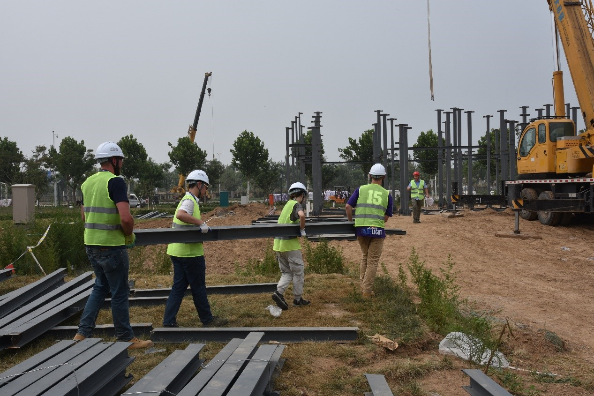

1、设计背景、设计理念
主题：归家——养老住宅的新生
Theme: New Life in an Elderly House
设计背景：老龄化社会
Design Background: Housing For An Ageing Society
2015年2月26日，国家统计局发布2014年国民经济和社会发展统计公报。公报数据显示，2014年年末我国60周岁及以上人口数为21242万人，占总人口比重为15.5%；65周岁及1以上人口数为13755万人，占比10.1%，首次突破10%。
我国的养老问题，集中地、短期地爆发出来，养老问题已经提升到了“事关国家发展全局、事关百姓福祉”的战略高度。
我们希望针对老年人养老问题，提出在城市周边、郊区建造低层别墅区，为城市老年人生活营造舒适、安静、便捷的绿色养老社区。通过老年别墅社区与智能家居结合，同时利用太阳能清洁能源来提高住宅的品质和舒适度。
On February 26, 2015, the National Bureau of Statistics issued the Statistical Communique on National Economic and Social Development in 2014. According to the communique, at the end of 2014, the number of people aged 60 and over in China was 212.42 million, accounting for 15.5% of the total population; the population aged 65 and over was 137.55 million, accounting for 10.1%, and exceeded 10% for the first time.
The problem of old-age care in our country has erupted in a centralized and short-term manner. The problem of old-age care has been elevated to a strategic level, that is “related to the development of the country and concerns the well-being of the people”.
We want to address the problem of old-age care and propose to build solar-powered low-rise villa’ in the suburbs to create a comfortable, quiet and convenient energy-efficient elderly community.
设计理念：互助式养老
Design Concept: Mutual Support
我们从中国文化教育所具有的“隔代教育”的特点中——爷爷奶奶教孙子孙女的传统文化传承模式的“私塾”——提取“爷爷家的小阁楼”的空间意象，将小孩子喜欢的有趣的空间和老年人空间结合，让老年人与小孩生活在一起，既是“儿童天地”更是“养老乐园”。
中国家庭模式并不是一成不变的，而传统养老模式在推广时会遇到很多问题。长期以来，我国实行以家庭养老为主的养老模式，但随着计划生育基本国策的实施，以及经济社会的转型，家庭规模日趋小型化，“4―2―1”家庭结构日益普遍，空巢家庭不断增多，所以家庭养老的人力成本，一般家庭难以承受，赡养者疲惫不堪，同时请保姆的这种模式效果也不很理想，主要由于保姆的素质参差不齐，保姆与老人产生各种矛盾纠纷的事情时有发生，也经常见诸媒体。随着两个人赡养四位老人现象的出现，这种家庭养老模式将越来越不适应当前社会。
各种养老机构虽然能够解决养老问题，但此模式存在社会成本巨大和资源严重的不足问题，绝大多数老年人习惯生活在家庭里面不愿意去养老院，因为与并不熟知的人朝夕相处，这将增加他们的失落感。“互助式养老”考虑到不同家庭实际情况利用家庭互助为老年人营造集体生活的“家庭空间”。
"Alternative education" is a special characteristic of Chinese culture and education, Grandparents take on the responsibility of raising grandchildren. Based on this, we extracting the Image of “Grandpa's small loft”, combine the fun space that kids love and the elderly space together, let elderly people live with children with mutual support.
The Chinese family model is not static, and the traditional model has many problems. For a long time, China has adopted an old-age model based on family. However, with the economic and social transition, the family size has become increasingly smaller, the “4―2―1" Family Structure is becoming more common (one child have to support four grandparent and two parent when they grow up.) , the number of families who do not have children is increasing. Therefore, the cost of raising family is unbearable for the average family.
Although various elderly pension institutions can solve the problem of old-age care, this model has the disadvantages of huge social costs. Most of elderly people are accustomed to living with the family and are reluctant to go to nursing homes, "Mutual support for the elderly" takes into account the "family space" of different families to use family mutual assistance to create a collective life for the elderly.
养老，居家是归处
传统文化：落叶归根 —— 年纪大了，回到家乡养老，很多人拼搏飘摇一生，到老才开始真正去体验与享受生活。浸染在传统文化中的中国人心中还是对故乡有着深深的依恋之情，正如余光中先生的《乡愁》中写的：而现在，乡愁是一湾浅浅的海峡，我在这头，大陆在那头。无论游子身在何处，熟悉的乡音，熟悉的家乡的味道，所有关于故乡的细节都会勾起人们对于故乡生活的无限怀念，所以，回乡养老将是大多数游子的第一选择。
传统思想：养儿防老 ——“反哺型”养老思想，在传统的养老思想下，儿女对于父母有着不可推卸的赡养责任。生儿育女，在过去的人们眼中也是一种对于未来加一份保障的行为。而儿女对自己的赡养也就和家庭和故乡连接在一起，家是养老不变是主场和主题。
Traditional Culture: When a person gets old, he thinks of going back to his roots. Many people struggle to have a career in early stages of life, and they really begin to enjoy life when they become older. Chinese people still have a deep attachment to their hometown. No matter where he travels to, the familiar accent, the taste of the familiar home cooking, all the details about the hometown will remind him of the memory of their hometown. Therefore, returning to the hometown, will be the first choice for most elders.
Traditional thinking: Bring up children for the purpose of being looked after in old age. And the children have responsibility for supporting the elderly.
养老，儿孙是活力
你陪我长大，我陪你余生 / 承欢膝下，儿孙绕膝
以儿养老：孩子的活泼与童真感染老人，满足“去孤独化”诉求
以老教孙：老人的阅历、经验、文化传授给孩子，满足孩子的“好奇心”“求知欲”
老少互养：老人与孩子之间相互照顾，孩子可在老人摔倒、不舒服时快速报警、呼救；老人照顾孩子衣食、避免受伤
You raise me up , I accompany you through the rest of your life.
The children are emotional support for the elderly, so that the elderly are no longer alone.
The elder person’s experience, and knowledge are taught to the child to satisfy the child's curiosity.
The elderly and the children take care of each other in different ways. The children can quickly call the police when they fall or feel ill. The elderly takes care of the children's food , clothing and other daily needs.
设计元素：Design elements
小花园：爷乐：养宠物、养花草、喝茶、打牌、晒太阳
炕：既玩玩具、又睡觉的地方；打滚不会掉下去
小花园中，爷爷遛遛狗，晒晒太阳，坐在院里喝喝茶，赏赏自己养的花草，空闲时还可约上三五好友围桌下棋打牌。
爷爷最宠的孙子跟在爷爷后面细心观察爷爷培花下棋，爷孙俩还能在阁楼涂鸦墙上涂鸦，累了再阁楼上休息，睡睡觉，玩玩玩具，爷孙俩在这个特意营造的空间里共享天伦之乐。
Garden: Pets, flowers, tea, playing Mahjong, sunbathing
Graffiti wall: Follow grandfathers to grow flowers, walk dogs, hunt birds, hide and seek, play with toys, and graffiti (attic graffiti walls)
Kang (a traditional bed in China) A place where you can play or sleep
In the small garden, the grandfather walks and enjoys the sunshine, sat in the courtyard and drank tea, and admired the flowers he had raised. When he has free time, he could play chess around the table with friends.
Behind the grandfather, the grandson observed the grandfather planting flowers. Grandfather and his grandson could draw on the attic graffiti wall. Then they rested in the attic, slept, and played toys. The grandsons shared in this purposely created space. Family happiness.
2、方案介绍 、模型展示 、成果
(1) 方案介绍
设计理念
SHELL→SHELL→SHELL
庭院→房屋→花园
形如盒子的空间内形成庭院，在庭院“盒子”中再形成房屋空间的小体积“盒子”，最后，在房屋“盒子”中再生成花园“盒子”，空间不断升入，层次丰富，变化多样，充满趣味。
In the shell shaped space form a courtyard, in the courtyard "shell" to form a small volume of housing space "rectangular shell", and finally, the house "shell" create a garden "shell".
基本图纸
智能家居——安全&舒适&节能: Smart Home System——Safety&Comfort&Energy Saving Safety
Safety
智能家居系统根据大数据分析结果，可以智能化调节室内环境，使人在室内能始终处于舒的状态。
According to data analysis, smart home systems can intelligently regulate the indoor environment and make people more comfortable in the room.
进行能源的最优调度，实现能源最大利用效率。
Comfort
“人员安全”：老人、小孩的室内安全得到保障，家庭财产不会受到侵害。
“系统安全”：智能家居能源管理系统健康有序运作，信息物理融合安全。
“隐私安全”：智能家居系统自带信息安全防御模式，杜绝因系统的数据采集、处理、储存而造成隐私泄露。
"Personnel safety": the indoor safety of the elderly and children is enhanced, and the family property is protected.
"System security": smart home energy management systems operates in an intelligent and orderly way.
"Privacy security": smart home system has its own information security defense mode to eliminate privacy leakage caused by data collection, processing and storage of the system.
Energy Saving
智能家居系统可以进行能源消耗的实时监控，自动计算合理的能源配比，优化系统运作方案，进行能源的最优调度，实现能源最大利用效率。
The smart home system can monitor the energy consumption in real time, automatically calculate the energy consumption, optimize the operation scheme of the system, carry out the optimal scheduling of energy usage to creat maximum energy efficiency.
(2) 模型展示 Model display
3、现场搭建照片 Photos of site construction

4、技术介绍、创新项目亮点Innovation introduction and bright spots of project
(1) 技术介绍 Technical introduction
3D材料—墙体板材外部喷涂
3D Printing the House
以石膏为主要材料的3D打印建筑油墨材料，破解了被称为3D打印建筑“阿克琉斯之踵”的材料问题，让3D打印建筑从模型变为现实。用石膏制成的3D打印油墨材料具有重量轻、零甲醛、成本低、耐火等优点。
Using gypsum as the main material, the 3D printing ink material for building has solved the material problem known as the "Achilles heel" of 3D printing buildings, making 3D printing buildings from models to reality. The 3D printing ink material made of gypsum has the advantages of light weight, zero formaldehyde, low cost and fire resistanc.

轻钢结构—建筑骨架
Light steel structure - building frame
一种年轻而极具生命力的钢结构体系，广泛应用于工农业、商业、服务性建筑。采用高效轻型薄壁型材，自重轻、强度高、面积小，配件自动连续、定型配套。各部分尺寸精确，内装饰等易于一次到位。外观优美防腐，减少围护和装修费用。增层、改造、加固优势明显，应用范围广，管线布置灵活，材料可回收。
The house design uses a steel structure system widely used in industrial, agricultural, and commercial buildings. The steel used in the design has high efficiency section profile that is light weight and high strength despite its small area. The 90-degree angles of the frame make interior decoration of the finished house easy.
(2) 创新项目亮点 Highlight of innovation project
智能家居：Smart home system
1、舒适便捷（减少人力劳动，智能营造氛围）Comfortable and convenient (reducing manpower and intelligent atmosphere)
本次参赛方案结合家居内灯光、通风、遮阳、背景音乐等因素，以情景切换的模式为室内人员打造不同情境下舒适的氛围，同时利用设备之间的联动减少了繁琐的逐一操作，为室内人员提供舒适环境的同时提供大大的便捷服务，实现智能化目标。
Combined with efficient lighting, ventilation, sun shading, background music and other factors, this creates a comfortable atmosphere for the indoor personnel in different situations by using the scene switching mode. At the same time, it uses the linkage between equipment to reduce the complicated operation, providing comfortable environment for indoor personnel.
2、智能监控（把握电量流动，明确能耗分配）Intelligent monitoring (control of power flow, clear allocation of energy consumption)
本次参赛方案以电能为切入点，利用智能设备，将平日里看不见摸不到的电能消耗加以监控和统计，并以图表的方式展示给室内人员，让用电透明化，让耗能细节化，给室内人员充分的信息数据基础，便于做出相应的用电设备使用调整，从而降低能耗，减少用电峰值压力，让我们更“懂”自己的家。
This project takes the electric energy as the starting point, uses the intelligent equipment to monitor energy consumption, and shows data to residents displayed in detail in the form of charts, so that the electricity usage is transparent, the energy consumption and the corresponding electrical equipment is made easy to operate. Using adjustments to reduce energy consumption and to reduce peak load pressure, so that we can "understand" our home.
3、养老关怀（专注老人生活，贴心安全养老）Caring for the elderly
本次参赛方案主体为“爷爷家的小阁楼”，将使用主体面向高龄人群，在设备布置上充分考虑老人生活习惯，如安装自感应夜灯、设置紧急报警装置等，尽可能为老人提供便捷，减少不必要的风险因素，本次房屋设计有孩子们喜欢的阁楼，同时设置有可视对讲系统，方便老人观察和联络阁楼上的孙辈，既留住了孩子的好奇心，又满足了老人的便捷性，让居家老人在惬意而便捷的环境下颐养天年，岂不乐哉！
One of the main body of the project is "the small attic of Grandpa's house", which considers the elder’s living habits on the equipment layout, such as installing night lamps, setting emergency alarm devices and so on, providing convenience for the elderly as much as possible, reducing unnecessary risk factors. An audiovisual intercom system between the attack and the main floor will be installed, convenient for the elderly to observe and contact the grandchildren on the attic.
产学研的合作模式：Cooperation Between Industry and academia
1.模式介绍 Model introduction
产学研合作中的“产”是指产业界及各类产业中依托技术创新的现代企业和现代企业家；“学”泛指学术界；“研”主要指以进行基础研究、应用研究和各类技术开发为中心的应用型科研院所以及高校中的科研机构。在我国，“产学研合作”一般是指高校、科研机构与产业界的合作。其涵义有广义和狭义之分。广义上的“产学研合作”是指教育与生产劳动有机结合以及科学研究在人才培养、科技开发和生产活动中的有机结合。狭义的产学研合作仅指高等学校、企业和科研院所三方本着优势互补、互惠互利、共同发展的原则所进行的合作与交流。
2.我校的产学结合模式 The mode of combining production and learning in our school
将不同育人主体凝聚在一起，使得政府的政策链、高校的专业链、企业的技术链达成一体化状态，打造政府、高校和企业协同育人的新模式，让学生再受到学校的基础教育的同时，向企业学习，将基础、综合、创新的三层次实践教学体系和整合政府、企业等社会多方资源的创新创业教育生态体系，结合在一起，发挥其最大的优势。
5、目标 、推广前景 Target ,Target population
(1) 目标: Target
提供一个有特色的，以赡养和养育相结合，老少相结合的绿色，舒适的新型太阳能建筑。
(2) 目标人群：Target population
a.向往乡村生活的城市人群 elderly who yearn for rural life
b.乡村老人及儿童 rural elderly and children
c.需要进行太阳能的应用和推广 people who desire the usage of solar energy
(3) 推广前景：Prospects for promotion
a.据中国产业调研网发布的2017年版中国太阳能建筑行业深度调研及市场前景分析报告显示，目前，太阳能与建筑一体化的发展呈现出广泛认可、全面推广、快速发展的良好态势。
b.在众多太阳能企业的大力推动下，随着节能减排意识以及城市高层建筑的普及，太阳能与建筑一体化已经被包括政府主管部门、设计院、房产开发商、太阳能企业、消费者广泛认可。
c.政府主管部门在相应的太阳能推广政策中也明确提出了应大力推广“太阳能建筑一体化”的模式，优先支持一体化项目，在济南、烟台、上海等30余省市都出台了建筑强制安装太阳能的政策规定，为太阳能与建筑一体化的发展奠定了政策基础。
a. According to the 2017 edition of China's industrial research network, China's solar building industry in-depth investigation and market prospects analysis report shows that the development of the integration of solar energy and architecture has a good trend of widespread recognition, comprehensive promotion and rapid development.
b. With the vigorous promotion of many solar enterprises. Solar enerly has been widely recognized by the government departments, design institutes, real estate developers, solar enterprises and consumers, with the awareness of energy saving and emission reduction.
c. In the corresponding solar promotion policy, the government has made clear that the model of "integration of solar energy" should be vigorously promoted and given priority. In more than 30 provinces and cities, such as Ji'nan, Yantai, Shanghai, and other provinces and cities, the policy of utilizing solar energy for the integration of building is a high priority.
6、赞助支持 Sponsorship support
(1) 赞助公司：Sponsoring Firm
青海文旅投资有限公司，特变电工新疆新能源股份有限公司，陆创智能科技（苏州）有限公司，上海明阳环保科技有限公司
Qinghai Wen Lu Investment Co., Ltd.
TBEA SUNOASIS CO., LTD
LUTRUN
Shanghai Mingyang Environmental Protection Technology Co., Ltd
赞助内容：Sponsorship content
技术与设备支持
Technology and equipment support